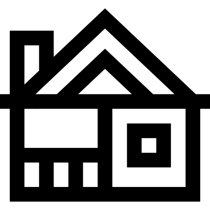

Впрошлом уроке мы рассмотрели простую программу, которая использовала raw_input для получения ответа пользователя, простые типы переменных и простой цикл «for». В этом уроке мы рассмотрим ещё больше типов переменных и напишем ещё больше программ.
Давайте рассмотрим другой тип переменных, который называется списки. В других языках программирования они называются массивами. Если мы обратимся к аналогии с коробками для обуви, то массив (список) представляет собой несколько склеенных друг с другом коробок с одинаковыми вещами. Например, в одной коробке лежат вилки, в другой — ножи, в третьей — ложки. Посмотрим на простой список— список месяцев. Мы запрограммируем его так:
months =
['Jan','Feb','Mar','Apr','May','Jun','Jul','Aug','Sep','Oct','Nov','Dec']Чтобы создать список, мы заключили все значения в квадратные скобки ( '[' и ']' ). Мы назвали наш список 'months'. Чтобы использовать список, мы дадим команду print months[0] или months[1] (которые выведут на экран 'Jan' или 'Feb'). Помните: счет начинается с нуля. Чтобы найти длину списка, можно использовать такую функцию:
print len(months)
которая вернёт 12.
Ещё один пример списков — категории в поваренной книге. Например...
categories = ['Main dish','Meat','Fish','Soup','Cookies']
Таким образом, в categories[0] хранится 'Main dish', а в categories[4] — 'Cookies'. Всё очень просто. Я уверен, вы сможете придумать много других примеров использования списков.
Далее, мы должны обсудить комментарии. Комментарии важны по нескольким причинам. Они не только говорят вам или другим людям, что вы пытаетесь делать, но и напомнят вам через полгода, что же вы хотели сделать. Когда вы будете писать много программ, комментарии станут важными. Также при их помощи вы заставите Python игнорировать какие-либо части кода. Чтобы закомментировать строку, поставьте перед ней знак '#'. Например:
#
Это комментарий
Комментарии можно вставлять в любое место в строке, но помните, что Python проигнорирует всё, что идёт после '#'.
|
|
 |
|